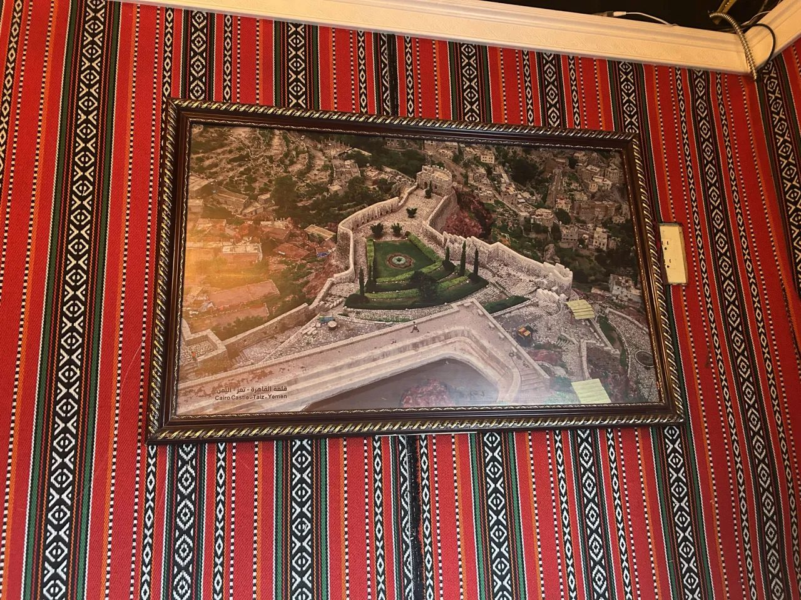
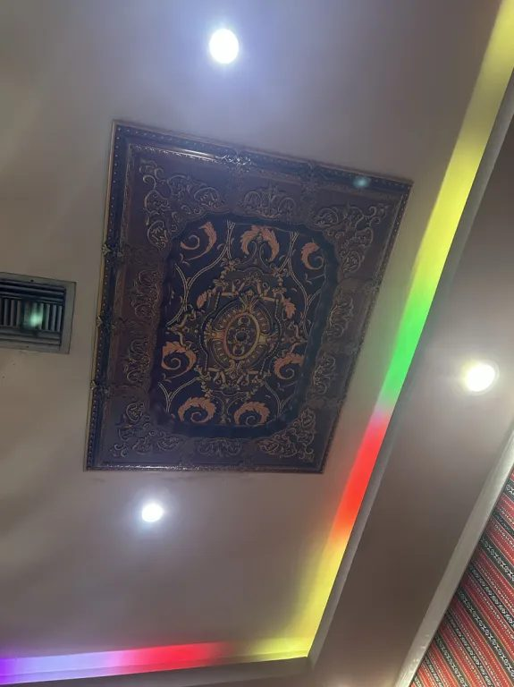
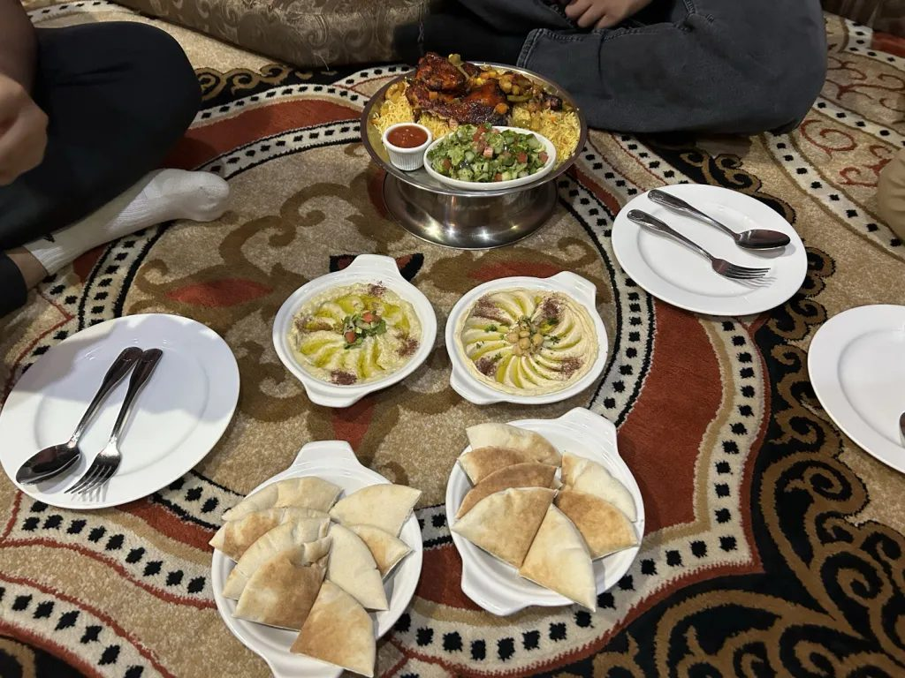

On our visit for this project, my group, along with Kartheek and Tanish's high school friend Sarthak, headed to Abu Naji, a Yemeni restaurant in Tampa. Since our group is exploring the Khaleeji region, a Yemeni restaurant felt like the right choice. Yemen sits on the Arabian Peninsula right next to the Gulf countries, and many of its dishes are eaten across the whole region. It was my first time there, and I was excited to see how their hummus and dips would compare to what I had tried at other places.

Walking Into Yemen
The decor told a story before the food even arrived. The walls were covered in red woven fabric with black and white geometric patterns, similar to Al Sadu, the traditional Bedouin weaving of the Gulf. A framed photo on the wall showed Cairo Castle in Taiz, Yemen, and a shelf near the entrance held a small model of Yemen's famous tall, decorated tower houses, along with brass horse and eagle figures, woven baskets, and plants. Even the ceilings were detailed, with carved patterns and an ornate medallion above us. Arabic music played in the background, something I have noticed in almost every Mediterranean and Arab restaurant I have visited.



Sitting Down, Literally
Instead of regular tables and chairs, Abu Naji had majlis style seating: a large patterned carpet surrounded by low cushioned sofas, where everyone sits on the floor and shares food from the center. This became our main topic of conversation. We realized it had been a long time since any of us had sat on the floor to share a meal. In most American restaurants, everyone sits in a chair with their own plate. Sitting together on the carpet made the meal feel more relaxed and more like a family gathering than a restaurant visit, which is exactly what the majlis is meant for.

The Food
We ordered hummus, baba ghanoush, fattoush salad, and fries to share. The fattoush was my favorite. The crunchy bread pieces had a slight sweetness that balanced the tangy salad perfectly. The hummus and baba ghanoush arrived drizzled with olive oil and spices, with hot pita bread that paired really well with both dips.
I did notice the dips were less seasoned than I am used to. After looking into it, I learned this is how they are traditionally made. Hummus and baba ghanoush come from the Levant, and their flavor is meant to come from tahini, lemon, garlic, and roasted eggplant rather than heavy spices. What felt mild to me was actually authentic. I was also a little disappointed there was no falafel, the usual go-to vegetarian option, but that made sense since falafel is more Levantine and Egyptian than Yemeni or Khaleeji. The menu stayed true to the restaurant's roots.

Mandi or Mabdi?
Kartheek ordered the chicken mabdi, which came on a raised metal platter with a bed of yellow rice, grilled chicken, vegetables, a side salad, and a red sauce. He said the chicken was very good. The menu also had mandi with an almost identical description, and since I had heard of mandi back home, I was curious about the difference. It turns out the difference is the cooking method. Mandi, which originated in Hadhramaut, Yemen, is slow cooked in a pit or clay oven until tender, while mabdi is grilled on hot stones over charcoal, giving the chicken the charred, crispy skin we could see on the plate. Mandi has also traveled far beyond Yemen through migration, including to India, which explains why I recognized the name.

Food Without Borders
We spoke briefly with a staff member and learned that he was not from Yemen but from the Khaleeji region. That small detail showed how connected these food cultures are. Yemeni dishes like mandi are now everyday food across the Gulf, and here they were being served in Tampa by someone from a neighboring country.
This visit showed me that food is about more than taste. The woven walls, the photos of Yemen, the floor seating, and the shared platters all carried culture with them. A meal on a carpet in Tampa connected us to traditions from thousands of miles away and reminded us that food is one of the easiest ways for people to come together.
References
ICCA Dubai. (n.d.). Appetizers, lesson #5: Hummus and baba ghanoush. https://www.iccadubai.ae/stockpot/appetizers-lesson-5-hummus-baba-ghanoush
Scoop Empire. (n.d.). The Bedouin way: 7 delicious dishes you need to try. https://scoopempire.com/the-bedouin-way-7-delicious-dishes-you-need-to-try/
Wikipedia. (n.d.). Baba ghanoush. https://en.wikipedia.org/wiki/Baba_ghanoush
Wikipedia. (n.d.). Mandi (food). https://en.wikipedia.org/wiki/Mandi_(food)